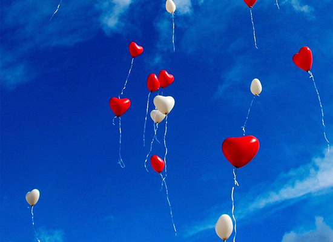
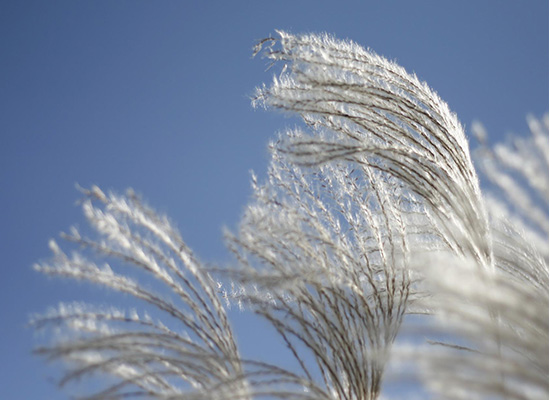

home > 회사소개 > 그룹소개
그룹소개
지속 성장을 향해 달려가는 삼천리 그룹을 소개합니다
2022년 삼천리만의 경영방침으로 다함께 도전해 나가겠습니다.
-
- 안전보건 경영
- 안전의식 내재화 · 선재적 안전관리
- 현장 책임경영
-
- 선도경영
- 도전과 혁신 · 미래 신사업 발굴
- 탄소중대응
-
- 가치경영
- 인재 중심 · 고객 만족
- 상생 추구
-

- VISION
- 삼천리의 비전은 고객, 구성원, 투자자, 사업동반자, 사회 등 모든 이해관계자들과 일 관된 가치와 문화를 공유하고 이들에 대한 가치 제안을 충족시켜 궁극적으로 인류 사 회에 기여하는 사랑받는 기업이 되는 것입니다. 사시 '가정애 · 직장애'는 사훈 '성실 · 일진’ 에 이어지는 삼천리가족의 실천 요건이다. 사시의 정신은 먼저 가정을 사랑하 고 또 내가 몸담고 있는 직장을 사랑하자는 것 입니다.
-

- MISSION
- 삼천리는 에너지부터 환경까지 의식주와 관련된 사업 영역에서 친환경적 생활문화 솔 루션을 제공함으로써 생활 속에 따뜻함과 깨끗함을 실현하여 인간의 삶의 질을 제고 하는 것을 목적으로 합니다. 사회적 약자와 소외계층의 문제 해결에 사회 전체가 동참 하며 나눔과 상생이 실현된 사회를 목표로 하고 있습니다. 깨끗한 자연환경이 조성되 어 지속가능한 지구촌 생태계가 유지되는 미래를 위해 노력하겠습니다.